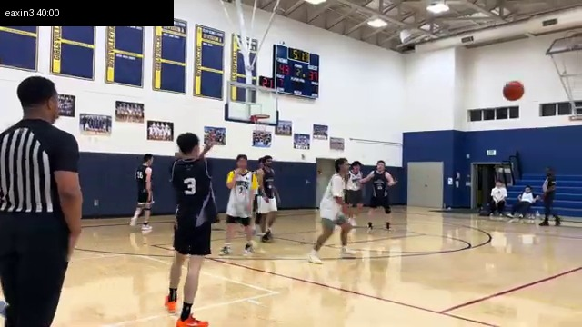
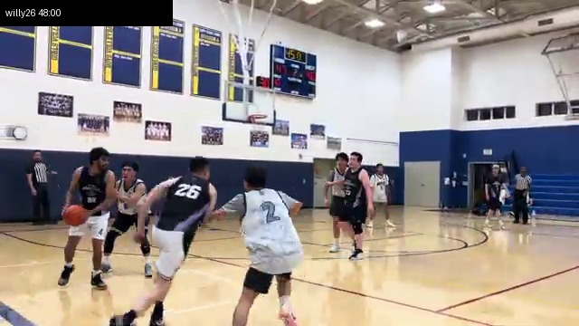
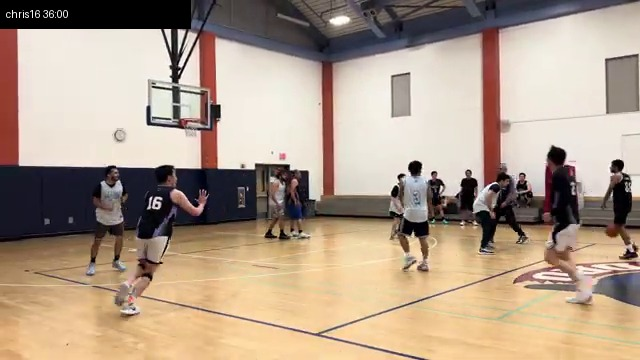
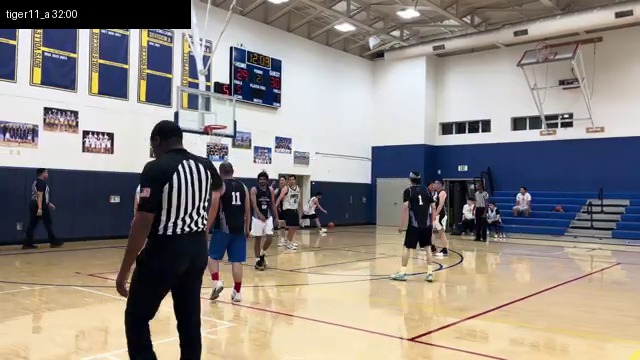
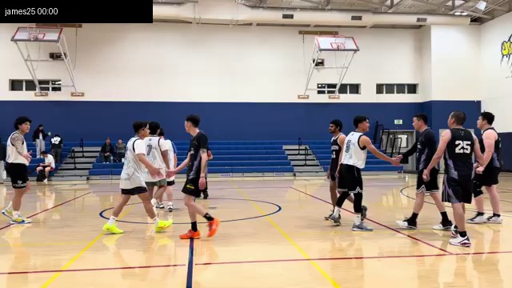

Core
Yang 是最难替代的第一压力点，Akila 是最稳的阵容连接器。
Yang is the hardest first-pressure role to replace; Akila is the cleanest stabilizer.
Mad Cow / Internal Review
这版是队内用人报告，不是对手 scouting。样本扩大到最近 20 场，目标是回答五件事： 每个人的优点、需要改进、最适合的用法、队内价值，以及最合理的 best lineup。
This is an internal team-usage report, not an opponent scout. The sample is now 20 Mad Cow games, focused on strengths, improvement areas, best usage, team value, and the best lineup.
Main Read
如果只选一个最稳的核心组合，我会先锁 Yang #23 + Akila #88/#69。 Yang 负责先把防守压动，Akila 负责让回合不断线。剩下三个人按需要选：得分、空间、身体、篮板、替补节奏。
If we lock one foundation first, it is Yang #23 + Akila #88/#69. Yang bends the defense first, Akila keeps the possession connected, and the other three spots should be chosen by need.
Yang 是最难替代的第一压力点，Akila 是最稳的阵容连接器。
Yang is the hardest first-pressure role to replace; Akila is the cleanest stabilizer.
Sean、Eaxin、James 最适合竞争常规 closing spot。
Sean, Eaxin, and James are the clearest regular closing candidates.
Willy、Chris、Tiger 的价值来自任务明确和对位需求。
Willy, Chris, and Tiger rise when the matchup and role are clear.
Best Lineup
Best Overall Five
这组最平衡：Yang 负责第一下，Akila 负责连接，Sean 负责接球攻击，Eaxin 拉空间和快速转移，James 做掩护、篮板和前场身体。
This is the most balanced five: Yang creates first pressure, Akila connects, Sean attacks advantages, Eaxin spaces and swings, and James supplies screening and rebounding.
More Physical
对面身体强、篮板压力大、需要更多冲击时，把 Eaxin 换成 Willy。缺点是空间会紧一点，所以 Yang 和 Akila 的传球选择更重要。
Use this when we need more contact, rim pressure, and rebounding. Spacing gets tighter, so Yang and Akila need cleaner reads.
More Speed / Spacing
需要速度、外线轮转和防守活力时，用 Chris 或 Tiger 替 James。Chris 更稳，Tiger 更能带节奏和压力。
Use this for pace, spacing, and perimeter activity. Chris is steadier; Tiger brings more tempo and pressure.
Rotation Board
| Player | Team Value | Best Strength | Main Improvement | Best Use |
|---|---|---|---|---|
| Yang #23 | Highest / Core | First pressure, downhill force | Earlier second-side reads | Primary touch, late-clock rescue |
| Akila #88/#69 | Core | Connector, stabilizer, second-side read | More assertive punish when ignored | Closing glue next to Yang |
| Sean #1 | High rotation | Catch-and-go scoring | Cleaner off-ball setup | Advantage finisher, pace changer |
| Eaxin #3 | High rotation | Spacing, quick swing, ready catch | Attack closeouts harder | Weak-side guard/wing connector |
| James #25 | Closing matchup | Size, screening, rebounding presence | Fast outlet decisions | Frontcourt stabilizer, box-out role |
| Willy #26 | Matchup value | Physical drive, body, contact | Quicker pass after help arrives | Attack bent defenses, strong-side pressure |
| Chris #16 | Role value | Floor balance, ready stance, low-usage fit | More decisive catch attacks | 3-and-D style connector |
| Tiger #11 | Role value | Guard depth, energy, ball movement | Keep decisions simple | Second-unit guard, defensive pressure |

Most Valuable Overall
Primary pressure player / 第一层进攻压力点
能自己先制造防守变形。瘦一点以后移动更轻，第一步和转换推进更容易带出优势。
He creates the first defensive shift. With the lighter body, his movement looks cleaner and transition pressure becomes easier.
第一下没打穿时，要更早找 Akila/Eaxin/Sean 的第二点，避免连续硬冲。
When the first drive is stopped, find the second outlet earlier instead of forcing the same lane.
开局、断电、关键回合先让他碰球。他不一定每次终结，但应该负责先让防守动。
Give him the ball early, when the offense stalls, and in key possessions. He should bend the defense first.
全队第一。因为第一创造最难替代，没有他，其他人的舒服接球会减少。
Highest value on the team. His first creation is the hardest role to replace.


Best Stabilizer
Connector and lineup stabilizer / 连接器和阵容稳定器
最会让回合不断线。能接第二拍、转移、重新组织，让队友继续在节奏里打。
He keeps possessions alive by handling the second beat, swinging the ball, and resetting structure.
有些回合可以更主动惩罚防守。如果对面放他连接，他要更果断投或突破。
He can punish soft defense more often with quicker shots or decisive drives.
最适合和 Yang 同场。Yang 先压防守，Akila 在第二侧做决定。
Best next to Yang: Yang bends the defense, Akila organizes the second side.
核心第二人。不是每回合最亮，但最能让阵容稳定。
Second core piece. Not always the loudest, but he stabilizes the lineup better than anyone.


Best Advantage Finisher
Catch-and-go scorer / 接球顺打得分点
接球后顺势攻击很有价值。球先转起来以后，他能把小优势变成突破、罚球线机会或继续压缩防守。
He is valuable attacking after the ball moves, turning small advantages into drives or paint pressure.
静态起手价值会下降。要更早准备接球，减少接到球后才开始想。
His value drops from static starts. He needs earlier off-ball preparation before the catch.
弱侧、45 度、转换提前跑位。不要让他每回合都当第一发起点。
Use him on weak-side catches, 45-degree catches, and transition lanes instead of constant first initiation.
高轮换/closing 候选。最适合放在 Yang 和 Akila 旁边吃优势。
High-rotation and closing candidate, especially next to Yang and Akila.

Best Spacing Connector
Quick connector and spacing guard / 快速连接和空间点
站位感和快速转移有价值。能让 Yang/Akila 的突破后续更干净。
His spacing and quick swings make the possessions cleaner after Yang or Akila starts the action.
接球后可以更坚决。被 closeout 时，不要只回传，要更常投或顺一步攻击。
Be more decisive after the catch: shoot or attack closeouts instead of only swinging back.
放弱侧、45 度、底角上移位。让他接球就做简单决定。
Use him weak side, at the 45, or lifting from the corner for simple catch decisions.
高轮换，适合 closing。因为他能帮核心球员拉开空间。
High-rotation and closing-level value because he creates space for the core players.

Physical Matchup Value
Physical attacker / 身体型冲击点
身体和对抗是优势。能在防守移动后继续往里压，给对方第二层压力。
His body and contact are the value. He can attack the second layer after the defense shifts.
遇到协防时要更快出球。不要把好机会变成多人夹击里的硬终结。
Pass sooner when help arrives so contact pressure does not become a forced finish.
第二波攻击、错位强打、篮下对抗。最好不要每回合静态持球起手。
Use him as the second wave, against mismatches, and for paint contact rather than static initiation.
对位价值很高。需要身体、冲击、犯规压力时，他会比纯空间点更重要。
High matchup value when the team needs size, contact, and foul pressure.

Low-Usage Balance
3-and-D style connector / 低使用率平衡点
站位、准备姿态、少犯错的价值不错。适合在核心旁边做简单连接。
Good value in positioning, readiness, and low-mistake play next to the core.
接球后要更果断。空位该投，closeout 该攻，不要让防守完全忽略他。
Be more decisive after the catch so defenses cannot ignore him.
防守、补位、底角/45 度简单接应。让他做清楚的小任务。
Use him for defense, rotations, and simple corner/45 catches.
稳定型轮换。不是高使用率核心，但能让阵容不乱。
Stable rotation value. Not a high-usage core, but helps the lineup stay organized.

Energy Guard
Second-unit guard and pressure piece / 第二阵容后卫和活力点
能给节奏和防守压力。适合替补上来改变速度，不让场面太慢。
He can add tempo and defensive pressure, especially with second-unit groups.
决定要简单。少做复杂处理，多做推进、传下一点、压迫防守。
Keep decisions simple: push, move it, pressure the ball, and avoid over-handling.
第二阵容带节奏，或和 Akila 一起上，让 Akila 帮他稳定回合。
Use him to lift bench tempo, ideally with Akila nearby to stabilize possessions.
轮换活力价值。不是固定 closing，但在需要速度和压迫时很有用。
Energy rotation value. Not a default closer, but useful when pace and pressure are needed.

Frontcourt Stabilizer
Screening, rebounding, physical balance / 掩护篮板和前场身体
有前场身体、卡位、篮板和掩护价值。能让阵容更像完整五人阵容。
He brings frontcourt size, screening, rebounding, and box-out value.
拿到球后要更快做简单决定：手递手、回传、篮下强起，不要停太久。
Make fast simple decisions after catches: handoff, outlet, or quick paint finish.
和 Yang/Akila/Sean/Eaxin 同场，负责掩护、篮板、护住禁区空间。
Best with Yang/Akila/Sean/Eaxin as the screener, rebounder, and paint-space stabilizer.
最适合做 best lineup 的第五人。因为他补的是其他人不容易补的前场任务。
Best candidate as the fifth player in the main lineup because he covers frontcourt tasks others do not.
Video Sample
注：这是 20 场视频观察后的队内价值判断，不是完整逐回合数据模型。因为你确认人没有变，所以旧样本被合并使用；Yang #23 的身体变化按“更轻、更快”处理，不当成角色变化。
Note: this is a 20-game video-based team value read, not a full possession chart. Since the roster stayed the same, older games are included; Yang's body change is treated as improved mobility, not a different role.